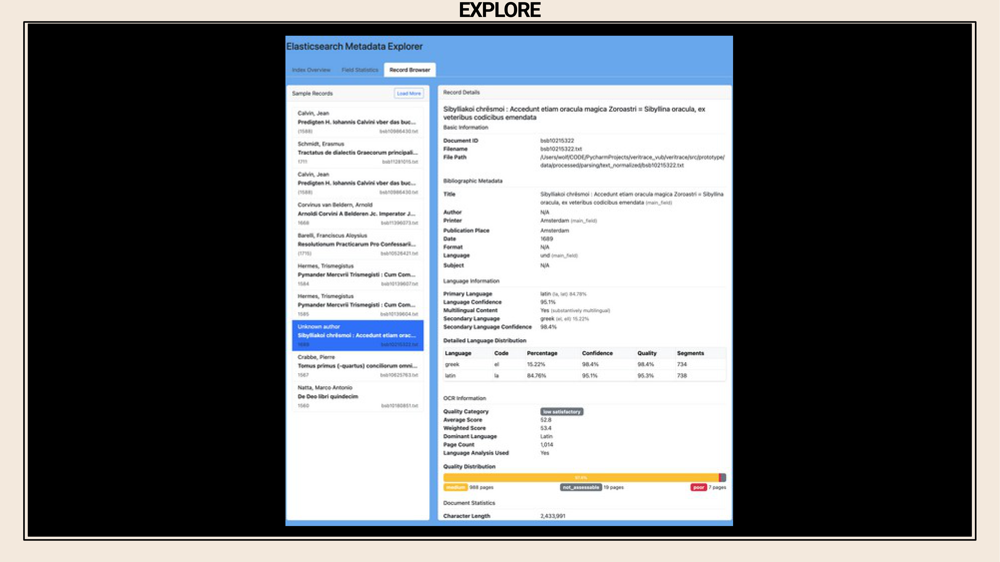

6 VERITRACE Traces de la Vérité: The reappropriation of ancient wisdom in early modern natural philosophy
Overview
The VERITRACE project, a five-year ERC Starting Grant initiative, meticulously charts the profound influence of the early modern ‘ancient wisdom’ or Prisca Sapientia tradition upon the development of natural philosophy. The project team aims to uncover broad networks of texts, passages, themes, topics, and authors, many of which remain largely unexamined by historians. To achieve this, the authors employ a substantial, diverse multilingual dataset comprising approximately 430,000 printed texts. This corpus, spanning from 1540 to 1728, draws its content from Early English Books Online (EEBO), Gallica, and the Bavarian State Library.
Addressing significant challenges posed by variable OCR quality, early modern typography, and multilingual semantics, the team harnesses state-of-the-art digital techniques. These include keyword search, text matching, topic modelling, and sentiment analysis. The project integrates Large Language Models (LLMs) in two primary capacities: GPT-based LLMs serve as “judges” for enriching and cleaning bibliographic metadata, whilst BERT-based LLMs generate vector embeddings to encode the semantic meaning of textual passages, thereby facilitating sophisticated text matching.
A complex 15-stage data processing pipeline transforms raw XML, HOCR, and HTML files into a structured Elasticsearch database, which underpins the VERITRACE web application. This alpha version of the application offers several functionalities: an “Explore” section for corpus statistics, a “Metadata Explorer” for detailed record examination (including granular language identification and OCR quality assessment), and a “Search” interface supporting complex keyword and field queries. Crucially, the “Match” section enables the identification of textual reuse through both lexical and semantic comparisons, supporting single-document, multi-document, and full-corpus analyses. Although the current BERT-based embedding model (LaBSE) shows promise for semantic matching across languages, its performance with early modern, out-of-domain data, coupled with OCR issues, necessitates further investigation into alternative models or fine-tuning strategies. The project anticipates future challenges related to semantic drift over centuries, scaling computational power for the vast corpus, and optimising performance for user-facing queries.
6.1 The VERITRACE Project and Team
The VERITRACE project, formally titled “Traces de la Vérité: The reappropriation of ancient wisdom in early modern natural philosophy,” operates as an ERC-STG Project (101076836). A dedicated team of five individuals, primarily based at the Vrije Universiteit Brussel (VUB) in Brussels, drives this initiative. Professor Dr. Cornelis J. Schilt serves as the Principal Investigator, leading a diverse group that includes a class assistant and two historians. The speaker, a historian of science and medicine specialising in the 18th century, fulfils the role of digital humanities specialist for the project. Further information is available on the project’s website, HTTPS://VERITRACE.EU.
6.2 Project Objectives and Historical Context
This five-year ERC Starting Grant project, active from 2023 to 2028, is firmly rooted at the Vrije Universiteit Brussel. Its central objective involves meticulously charting the profound influence of the early modern ‘ancient wisdom’ tradition, also known as Prisca Sapientia, upon the nascent field of early modern natural philosophy and science. This tradition manifests in significant historical works such as the Chaldean Oracles, the Sibylline Oracles, the Orphic Hymns, and, perhaps most famously for scholars of chemistry, the Corpus Hermeticum.
Historical evidence already confirms the tradition’s impact; Isaac Newton, for instance, engaged with the Sibylline Oracles, whilst Johannes Kepler demonstrated familiarity with the Corpus Hermeticum. Beyond these well-documented instances, the project team aims to delve deeper. The researchers have assembled a close-reading corpus of 140 works specifically representing this tradition. The broader ambition extends to uncovering a much wider, often overlooked, network of texts, passages, themes, topics, and authors who engaged with this tradition—a collection one scholar aptly terms the ‘great unread’, given the frequent neglect of these numerous works by lesser-known authors in historical scholarship.
6.3 Computational Approaches to History and Philosophy of Science (HPSS)

The VERITRACE project fundamentally seeks to advance computational approaches within the history and philosophy of science. A primary goal involves applying large-scale multilingual exploration to the central research question. The project team specifically aims to identify textual re-use, distinguishing between direct lexical instances, such as uncited quotations, and more indirect semantic re-use, encompassing paraphrases or conceptually similar content that contemporary readers would have recognised. This functionality effectively serves as an “early modern plagiarism detector.” Beyond this, the initiative strives to uncover potentially ignored networks of texts, passages, themes, topics, and authors. Ultimately, this systematic exploration promises to reveal novel patterns within the intellectual history and philosophy of science.
6.4 Corpus Construction and Digital Analysis Techniques

The project team constructs a substantial, diverse, and multilingual dataset, focusing exclusively on printed works rather than handwritten materials for manageability. This corpus draws from three distinct multilingual sources, encompassing texts in at least six different languages. The selected publication period spans approximately 200 years, commencing in 1540 and concluding in 1728, shortly after Isaac Newton’s passing. Key data sources include Early English Books Online (EEBO), materials downloaded from the French National Library via Gallica, and, as the largest contributor, the Bavarian State Library. Cumulatively, this effort has amassed a corpus of approximately 430,000 books. The researchers plan to analyse this extensive collection using state-of-the-art digital techniques, including keyword search, text matching, topic modelling, and sentiment analysis, amongst others.
6.5 Core Challenges and LLM Integration
The VERITRACE project confronts several core challenges inherent in processing historical texts at scale. A primary hurdle involves the variable quality of Optical Character Recognition (OCR) text, which libraries provide in raw formats such as XML, HOCR, and HTML, crucially without accompanying ground truth page images. This directly impacts all subsequent data processing. Furthermore, early modern typography and semantics present significant complexities across the project’s six or more languages. The sheer volume of data—hundreds of thousands of texts published across Europe over two centuries—also poses a considerable challenge.
To address these issues, the project team integrates Large Language Models (LLMs) in a two-sided approach. On the decoder side, GPT-based LLMs function as “judges” to enrich and clean the project’s metadata. On the encoder side, BERT-based LLMs generate vector embeddings. These embeddings encode the semantic meaning of sentences and short passages within the textual corpus, a critical step for enabling the desired text matching functionalities.
6.6 Case Study: LLMs as Judges for Metadata Enrichment

A specific case study explores the application of LLMs as judges for metadata enrichment within the VERITRACE project. The fundamental motivation stems from the Universal Short Title Catalogue (USTC), recognised as a high-quality source of bibliographic metadata. The researchers aim to map VERITRACE records onto USTC records, thereby generating enriched metadata that requires less manual cleaning. Whilst some mapping can be automated, for instance through external identifiers, the majority of records necessitate manual comparison due to the initial uncleaned state of the VERITRACE data. This manual process, involving the comparison of bibliographic metadata pairs to determine if they represent the same underlying printed text, proves exceptionally tedious; each team member was assigned 10,000 such pairs for review. Consequently, the project proposes employing LLMs to automate this laborious task.
6.7 LLM Bench for Bibliographic Record Evaluation
To evaluate bibliographic record matches, the researchers have devised a system employing a chain of LLMs, conceptualised as a “bench” or panel of judges. This chain comprises a Primary LLM, a Secondary LLM, a Tiebreaker LLM, and an Expert LLM, which handles edge cases and facilitates a circular review process. The LLMs’ task involves assessing pairs of bibliographic records—one originating from a low-quality metadata source and the other from a high-quality source—to ascertain whether they represent the identical underlying text. Crucially, the models must provide not only a judgment (match or no match) but also detailed reasoning and confidence levels for each decision. The project validates these LLM decisions against a ground truth dataset, with the VERITRACE team conducting a final review.
6.8 Prompt Guidelines and Output Structure for LLM Judges
The LLM judges receive pairs of bibliographic records alongside extensive prompt guidelines. These guidelines delineate field priorities, specific match criteria, and indicators for non-matches, ensuring a structured evaluation process. The expected output from the LLMs adheres to a defined structure, including the ground truth, the decisions made by the Primary, Secondary, and Tiebreaker models, the key factors influencing their judgments, and a detailed reasoning for each match or non-match decision. This comprehensive output facilitates analysis and validation of the LLMs’ performance.
6.9 Challenges in LLM-Based Metadata Enrichment

The implementation of LLMs for metadata enrichment remains a work in progress, not yet achieving full functionality. A significant challenge involves the frequent occurrence of hallucinations in the output, where LLMs generate records not present in the original input. This issue is particularly observed with open-source models like Llama. Furthermore, whilst requesting more structured output aims to reduce unhelpful responses, it often results in more generic and less insightful reasoning, especially regarding the justification for decisions. Finding the optimal balance between structured output and the utility of the responses proves difficult, akin to an art rather than a precise science. Despite these hurdles, the project team recognises the substantial potential for time-saving if this approach can be successfully implemented, and actively seeks external advice on these ongoing challenges.
6.10 VERITRACE Web Application: Alpha Version
The VERITRACE web application currently exists as an alpha version, an extremely new development not yet publicly accessible. This iteration resides on the speaker’s local computer, with functionalities demonstrated through screenshots. It serves as a foundational promise of the project’s future capabilities. Engineers are presently testing a BERT-based LLM, specifically LaBSE, to generate vector embeddings for every passage within the extensive textual corpus. However, preliminary assessments suggest that LaBSE will likely prove insufficient for the project’s comprehensive requirements, despite demonstrating efficacy in certain specific cases.
6.11 Data Processing Pipeline Architecture

The project employs a complex 15-stage data processing pipeline to transform raw textual data, received in XML, HOCR, and HTML formats from libraries, into a structured Elasticsearch database that serves as the web application’s backend. This intricate process demands meticulous optimisation at each stage. Key tasks within the pipeline include extracting text into clean text files, generating precise mappings of all character positions, segmenting the text into meaningful units such as sentences and passages, and rigorously assessing the OCR quality. The generation of vector embeddings, crucial for semantic analysis, occurs towards the latter stages of this comprehensive pipeline.
6.12 Web Application: Explore Section
The VERITRACE web application organises its functionalities across approximately five main sections. The “Explore” section serves as a central hub for users to gain insights into the corpus through various statistics and metadata visualisations. This statistical data is directly sourced from a Mongo database. Currently, the system holds 427,305 metadata records describing the books within the corpus. Users can examine detailed visualisations, including pie charts for language distribution, and bar charts illustrating documents by data source, documents by decade, and publication places.
6.13 Elasticsearch Metadata Explorer and OCR Quality Assessment
The Elasticsearch Metadata Explorer provides users with the capability to browse and inspect the rich metadata generated for each text within the corpus. A crucial feature involves granular language identification, performed on every text down to segments of approximately 50 characters. This addresses the common issue of multilingual texts where primary metadata might only indicate a single language; for instance, the system can identify a text as 15% Greek and 85% Latin, correctly classifying it as substantively multilingual. Furthermore, the system undertakes OCR quality assessment. This challenging task is performed solely on the raw text, as ground truth page images are unavailable. The assessment is meticulously applied on a page-by-page basis, rather than assigning a single quality score to an entire book, aiming to provide a detailed quality assessment for every individual page.
6.14 Advanced Search Functionality

Scholars are anticipated to primarily utilise the “Search” section, which offers robust keyword search capabilities. Users can perform basic keyword searches, such as for “Hermes,” which, even in the current prototype indexing only 132 files, yields 22 documents with 332 total matches, resulting in a 15 GB index. The system supports more sophisticated queries leveraging Elasticsearch functionalities, including field queries (e.g., specifying “author:kepler ‘hermes’” to find one document from 1621), and complex Boolean operations (AND, OR, nested queries). Furthermore, users can execute proximity queries, for instance, locating texts where “Hermes” and “Plato” appear within ten words of each other. The full corpus, comprising over 400,000 texts, will eventually lead to an index size measured in terabytes.
6.15 Planned Analytical Tools

The “Analyse” section of the website, whilst not yet implemented, will host a suite of advanced analytical tools. Planned features include topic modelling, latent semantic analysis (LSA), and various forms of diachronic analysis. These functionalities, drawing upon ongoing developments in the field, will be integrated into the platform to support deeper scholarly inquiry.
6.16 Text Reading Functionality
The “Read” section of the web application provides scholars with the capability to access and read the texts in their original format. Integrating a Mirador viewer, the platform displays digital facsimiles (PDFs) for every text within the corpus. This functionality ensures that users can engage with the historical documents as they would on a library website, whilst also providing access to the associated metadata.
6.17 VERITRACE Match: Textual Reuse Identification

The “Match” section of the VERITRACE web application is specifically designed to identify textual reuse across different documents. This functionality supports various comparison modes: users can compare a single document against another, conduct multi-document comparisons (for instance, pitting Isaac Newton’s Latin Optics against all of Johannes Kepler’s works within the database), or even perform a full corpus match, comparing one text against the entire collection. The latter, however, presents a significant computational challenge, potentially leading to considerable wait times for users. To address the nuanced nature of text matching, the interface exposes numerous parameters, such as minimum similarity scores, allowing users to fine-tune the comparison settings and obtain tailored results.
6.18 Text Matching Types and Cross-Language Sanity Check

The text matching functionality offers distinct approaches: lexical matching, which relies on keyword and vocabulary similarity; semantic matching, employing vector embeddings to identify conceptually similar passages, crucially functioning across different languages without requiring shared vocabulary; and hybrid matching, which combines both approaches with adjustable weights. Users can also select from various matching modes: a standard mode, a comprehensive mode that utilises more computational power for exhaustive results, and a faster mode.
A critical sanity check involves comparing Isaac Newton’s Latin Optics (1719 edition) with its English counterpart (Opticks, 1718 edition). When a lexical match is performed in standard mode, the system correctly yields no significant results, as anticipated for texts in different languages. However, switching to comprehensive mode reveals three matches, indicating the presence of some English text, likely from the preface, within the Latin edition. This outcome validates the system’s ability to differentiate between lexical and conceptual similarities whilst highlighting the nuances of multilingual historical texts.
6.19 Lexical Self-Matching and Result Visualisation

A second sanity check involves performing a lexical match of a text against itself, yielding expectedly high scores: a Normalized Match Score of 100%, a Coverage Score of 99.7%, and a Quality Score of 100.0%. The system reports that both the query and comparison documents comprise 1,140 passages. This operation, taking 23 seconds, involved 1,299,600 comparisons to identify an estimated 1,137 matches, with 20 of 100 total matches displayed.
The results are presented with a clear match summary, providing helpful information about the query’s outcome. A bar chart illustrates the similarity score distribution, showing the majority of matches falling within the 90-100% range. For individual matches, the interface automatically highlights matching terms, presenting the source or query passage on the left, the comparison passage on the right, alongside their respective similarity scores.
6.20 Semantic Matching Across Translations
A third sanity check investigates semantic matching between a text and its translation, specifically comparing Isaac Newton’s Latin Optics with its English translation, Opticks. The expectation posits that whilst lexically dissimilar, these texts should exhibit strong semantic correspondence. The observed outcomes confirm this, with matches appearing reasonable despite underlying OCR issues. The interface presents the Latin source passage on the left and the English comparison passage on the right, accompanied by high similarity scores (e.g., 91.77%, 91.12%), demonstrating the model’s ability to capture conceptual equivalence across languages.
6.21 Challenges and Limitations of Current Semantic Matching

Despite promising initial results, the current semantic matching implementation faces several challenges. The overall match score calculation requires refinement, and a notably low coverage score, for example 36.9%, significantly impacts this metric. This lower coverage might be partially explained by the Latin edition being considerably longer than its English counterpart, alongside other substantive textual differences. Nevertheless, the primary concern centres on the adequacy of the current embedding model, LaBSE, which is considered “not good enough” for the task. This inadequacy likely stems from an “out-of-domain model collapse,” as the model, trained on modern languages, struggles with the distinct semantics of early modern texts, compounded by poor OCR quality, complex typography, and mixed multilingual content. Whilst the quality score remains high, indicating the precision of the matches identified, the model’s overall performance suggests a need for further development.
6.22 Future Challenges and Research Directions
The project anticipates several significant challenges and outlines key research directions. Regarding embedding models, whilst LaBSE serves as a starting point, the researchers are exploring alternatives such as XLM-Roberta, intfloat multilingual-e5-large, and historical mBERT, each presenting trade-offs between accuracy, storage requirements, and inference time. A crucial consideration involves whether to fine-tune a base model on the unique historical corpus, given its distinct characteristics.
A fundamental challenge involves addressing semantic drift, the change in meaning over centuries. The project must determine how to handle texts published across a broad temporal span (e.g., 1540 vs. 1700) and in different languages, whilst ensuring their representation within a consistent vector space. Poor OCR quality profoundly impacts all downstream processes, including the crucial segmentation of texts into sentences and passages. Re-OCR of the entire corpus is not feasible; therefore, the team may focus on re-OCR for only the lowest quality texts or invest in locating existing high-quality versions. Finally, scaling and performance present substantial hurdles. The current prototype, indexing merely 132 texts, already incurs query times of 15 seconds. Scaling this to the full corpus of 430,000 texts necessitates significant optimisation to ensure user-acceptable response times. The project actively welcomes expert advice on these complex issues.